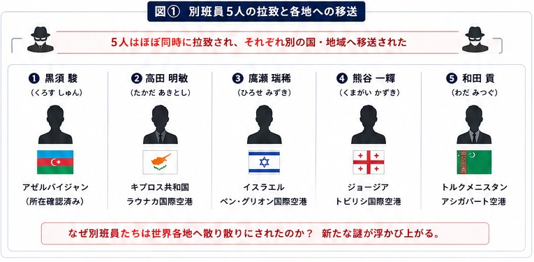
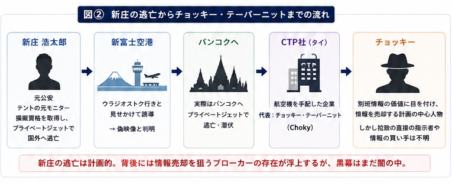
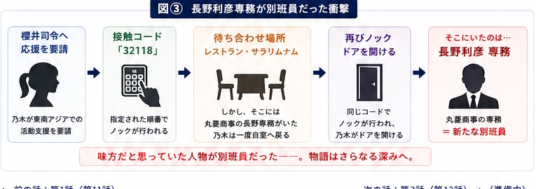

別班員5人拉致の全貌へ。
新庄の逃亡ルート、チョッキー、そして新たな別班
乃木は黒須たち仲間を救うため、バルカからキプロス、そして東南アジアへ。アリの証言から新庄の本当の逃亡ルートが見え始め、物語は「別班情報の売却」と新たな別班員の存在へ広がります。

1. 拉致された別班員5人
第1話で明らかになった、黒須を含む別班員5人の拉致事件。敵は隊員を一人ずつ偶然狙ったのではなく、別班の行動を事前に把握したうえで、ほぼ同時期に世界各地へ移送していました。
乃木にとって今回は単なる任務ではありません。相棒の黒須を含む仲間を失うかもしれないという危機感が、行動の大きな原動力になります。
| 別班員 | 確認された場所 |
|---|---|
| 黒須 駿 | アゼルバイジャン |
| 高田 明敏 | キプロス共和国・ラルナカ国際空港 |
| 廣瀬 瑞稀 | イスラエル・ベン・グリオン国際空港 |
| 熊谷 一輝 | ジョージア・トビリシ国際空港 |
| 和田 貢 | トルクメニスタン・アシガバート空港 |

2. AIハヤトが導き出した犯人候補
別班司令部ではAI「ハヤト」が監視映像、通信記録、過去の行動履歴を解析。前作でテントのモニターだった公安の新庄浩太郎が重要人物として浮上します。
新庄はベキの脱出にも関わっていました。しかし乃木も野崎も、この時点では「新庄がすべての首謀者」とは決めつけず、誰かに利用されている可能性も残します。
3. 乃木憂助、ノコルへ協力を求める
乃木は事件の手掛かりを求めてバルカへ。かつてテントの拠点だった場所で再会したのがノコルです。
前作では敵として向き合うこともあった二人ですが、今回は目的が一致します。「別班員を救出する」ため、乃木はノコルの情報網へ協力を求めます。
4. キプロスへ向かう乃木
ノコルからの情報をもとに、乃木は事件の鍵を握る人物として元テント幹部のアリへたどり着きます。アリはベキに許され、逃亡先からキプロス共和国へ移住していました。
5. アリとの対決と尋問
乃木とドラムはキプロスでアリを拘束。家族も拘束したように見せながら、別班が開発したポリグラフとAIハヤトを使って尋問します。
アリは、新庄と教習所で知り合い、テントのモニターへ引き入れたことを認めます。一方で、新庄の国外逃亡先や別班員の移送については知らないと証言。AIハヤトもその供述を高い確率で真実と判断し、アリは首謀者候補から外れます。
さらにアリは、第1シリーズで乃木へ暗号表を渡した理由について、ゴビの裏切りを暴き、ノコルを救える人物として乃木に賭けたのだと説明します。
アリの証言から、新庄がバルカで通っていた「教習所」は、実は飛行機の操縦訓練施設だったことも判明します。
6. 新庄浩太郎の本当の逃亡先
新庄は飛行機の操縦資格とマルチエンジンのライセンスを持ち、特殊メイクと偽造パスポートを使ってプライベートジェットの操縦士として国外へ逃亡した可能性が浮上します。
当初のウラジオストク行きは別班を誘導する罠。太田が新富士空港の映像を再調査すると、過去映像を再利用した偽物だったことが分かります。
乃木は当日に線状降水帯が発生していたことを思い出し、再解析を依頼。その結果、新庄が実際に向かったのはウラジオストクではなくバンコクだと判明します。
プライベートジェットを3回変更していた「Nikolai E Lebedev」という人物の正体も不明のままです。
7. 首謀者候補チョッキー・テーパーニット
バンコク行きの航空機を手配した企業を追うと、タイの実業家チョッキー・テーパーニット（Choky）が代表を務めるCTP社へ行き着きます。
チョッキーは、かつてアリが管理していたテントの上位モニター。別班の分析では、新庄が持つ別班員情報の価値に目を付け、その情報を売却しようとした可能性が高まります。
AIハヤトと太田の分析では、イラン、中国、ロシア、北朝鮮、シリアを拠点とする複数の情報ブローカーとの接触も浮上。ただし、別班員5人の拉致を直接命令した最終的な首謀者や、情報の買い手はまだ確定していません。

8. バンコクへ潜入、新庄を追う
乃木とドラムはタイ警察やチョッキー側の監視を避けるため、カンボジアのプノンペンから陸路でシアヌークビルへ移動。漁船を使ってタイへ入り、パタヤを経由してバンコクへ向かいます。
バンコクではサイアム・ホテル307号室を拠点に調査。太田の解析から、チョッキーの居場所がプーケット周辺と絞り込まれ、新庄もチョッキー所有の別荘地に潜伏している可能性が高まります。
建物には赤外線探知を妨げる特殊素材が使われていましたが、ドラムは住人が注文した食料に注目。納豆と赤飯を購入した家を見つけ、新庄の隠れ家を特定します。
9. 黒須駿が残した手掛かり
乃木は黒須の行動を追う中で、黒須がただ不意打ちを受けただけではなく、敵の動きをある程度把握していた可能性を考えます。
経験豊富な別班員である黒須が、あまりにも簡単に捕まったように見えること自体が不自然です。第2シリーズでは「味方の中に敵がいるのか」という疑いが、より大きなテーマになっていきます。
10. 新たな別班員の登場 — 長野専務の正体
乃木は櫻井司令へ、東南アジアで活動する別班員の応援を要請します。
待ち合わせ予定だったレストランには丸菱商事の長野利彦専務がいたため、乃木は正体を見られないようホテルの自室へ戻ります。
やがて指定された接触コード「32118」と同じ順番でノックが行われ、乃木がドアを開けると、そこに立っていたのは――。
会社の上司として見ていた人物が、実は同じ別班側の人間だったという衝撃の展開です。

11. 野崎守も独自に動く
一方、野崎は公安として元部下・新庄を追い続けます。乃木とは立場が異なりますが、目指す方向は同じ。別班員拉致事件の真相解明です。
野崎はタイガーマスクの登場人物・若月ルリ子のフィギュアを手にし、乃木へ「裏でこの会話を聞いている、お前たちの司令官は何と言っている？」という意味の問いを投げかけます。
公安としての捜査と、乃木との信頼関係。その微妙なバランスも今後の重要ポイントです。
12. ベキの死後も続く影と第2話のラスト
第2シリーズで大きな疑問となるのが、「テントは本当に消滅したのか」という点です。組織が解体しても、人間関係・資金・人脈までは簡単には消えません。
アリ、チョッキー、新庄と、旧テントの人脈が新たな事件へつながっていく一方で、黒須たちの居場所や本当の敵はまだ見えていません。
さらに、薫を監視している陸上自衛隊・特殊作戦群の監視ポイントなど、不気味な動きも残され、第3話へ続きます。
第2シリーズ 第2話で新たに分かったこと
| 項目 | 第12話終了時点 |
|---|---|
| 別班員 | 黒須を含む5人が拉致され、世界各地へ移送されている |
| 新庄 | ウラジオストクではなくバンコクへ逃亡した可能性が高い |
| アリ | 拉致事件の首謀者ではなく、乃木へ協力する方向へ |
| チョッキー | 別班情報売却計画の中心人物候補として浮上 |
| ノコル | 乃木へ情報を提供し、救出に協力 |
| 長野利彦 | 新たな別班員として登場 |
第2シリーズ 第2話の見どころ
第2話は、第1シリーズで築かれた「乃木・野崎・別班・テント」の関係を、もう一度組み替える回でした。
重要なのは、別班という絶対的に見えた組織が初めて大きな弱点を見せたこと。そして過去のテント人脈が、新たな情報売却事件へつながっている可能性です。
さらにラストでは、丸菱商事の長野専務という身近な人物が別班員だったことが明らかになり、「誰が味方なのか」という作品の面白さが一段深まりました。
第13話のあらすじ・伏線・考察へ